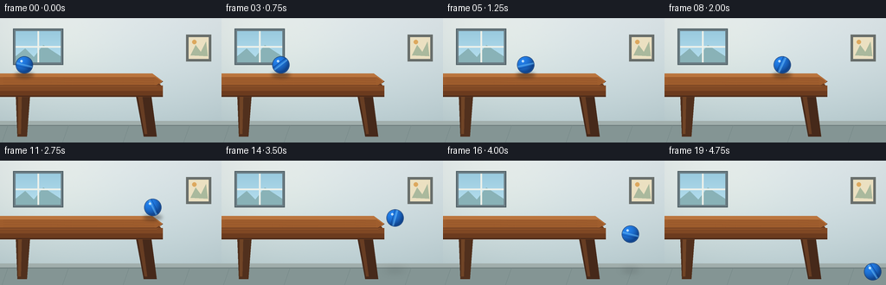

CODING AGENTS AS PIXEL WORLD MODELS
traex/GPT-5.6-Sol · instance_preservation_0020
点击播放 · 原生 RGB 像素
逐轮保存的候选
回放视频、检查图与代码变化。
每份候选均可单独播放。实际图片检查记录在下方工具轨迹中。
候选 01播放与检查图
点击播放 · 原生 RGB 像素

展开代码变化
--- 上一保存版本
+++ 本次保存版本
@@ -0,0 +1,190 @@
+from pathlib import Path
+import math
+import numpy as np
+from PIL import Image, ImageDraw, ImageFilter
+import artifact_io
+
+# Deterministic, supersampled 2-D animation.
+W, H, N = 256, 144, 20
+SS = 4
+SW, SH = W * SS, H * SS
+rng = np.random.default_rng(7)
+
+def sc(v):
+ return int(round(v * SS))
+
+def pts(seq):
+ return [(sc(x), sc(y)) for x, y in seq]
+
+def ellipse(draw, box, **kw):
+ draw.ellipse(tuple(sc(v) for v in box), **kw)
+
+def rectangle(draw, box, **kw):
+ draw.rectangle(tuple(sc(v) for v in box), **kw)
+
+def line(draw, seq, width=1, **kw):
+ draw.line(pts(seq), width=max(1, sc(width)), **kw)
+
+def make_room():
+ # Soft wall/floor gradients establish depth without distracting from the action.
+ yy, xx = np.mgrid[0:SH, 0:SW]
+ y = yy / SS
+ x = xx / SS
+ wall = np.empty((SH, SW, 3), dtype=np.float32)
+ top = np.array([226, 235, 238], dtype=float)
+ bot = np.array([188, 207, 211], dtype=float)
+ t = np.clip(y / 122.0, 0, 1)[..., None]
+ wall[:] = top * (1-t) + bot * t
+ # Warm window light and restrained vignette.
+ glow = np.exp(-((x-48)**2/(2*64**2) + (y-31)**2/(2*50**2)))[...,None]
+ wall += glow * np.array([12, 9, 3])
+ vignette = ((x-W/2)/(W/2))**2 + ((y-H/2)/(H/2))**2
+ wall -= np.clip(vignette[...,None]*6, 0, 11)
+ noise = rng.normal(0, .42, (SH, SW, 1))
+ wall += noise
+ im = Image.fromarray(np.uint8(np.clip(wall,0,255)), 'RGB')
+ d = ImageDraw.Draw(im)
+
+ # Window, safely in the background.
+ rectangle(d, (15, 12, 73, 54), fill=(107, 125, 132), outline=(76, 91, 97), width=sc(1))
+ rectangle(d, (18, 15, 70, 51), fill=(167, 207, 220))
+ # Sky gradient panes.
+ for py in range(sc(15), sc(51)):
+ f = (py/SS-15)/36
+ c = (int(154+28*f), int(202+22*f), int(222+18*f))
+ d.line((sc(18),py,sc(70),py), fill=c, width=1)
+ # Distant soft silhouettes.
+ d.polygon(pts([(18,44),(29,35),(39,45),(50,31),(70,44),(70,51),(18,51)]), fill=(137,178,183))
+ line(d, [(44,15),(44,51)], width=2, fill=(237,241,234))
+ line(d, [(18,33),(70,33)], width=2, fill=(237,241,234))
+ # A small framed abstract picture on right.
+ rectangle(d, (215, 19, 244, 50), fill=(104,110,107))
+ rectangle(d, (218, 22, 241, 47), fill=(235,224,193))
+ d.polygon(pts([(220,43),(226,31),(232,39),(238,27),(240,44)]), fill=(170,185,157))
+ ellipse(d, (222,25,227,30), fill=(221,168,94))
+
+ # Baseboard and floor.
+ rectangle(d, (0, 119, 256, 124), fill=(161,174,172))
+ rectangle(d, (0, 124, 256, 144), fill=(132,149,148))
+ line(d, [(0,124),(256,124)], width=1, fill=(107,123,123))
+ for x0 in (9, 79, 149, 219):
+ line(d, [(x0,124),(x0-7,144)], width=.45, fill=(117,135,135))
+ return im
+
+BASE = make_room()
+
+def draw_table(im):
+ d = ImageDraw.Draw(im)
+ # Legs behind apron.
+ d.polygon(pts([(18,84),(35,84),(31,137),(20,137)]), fill=(81,48,29))
+ d.polygon(pts([(156,84),(174,84),(181,137),(166,137)]), fill=(70,41,26))
+ # Highlights down legs.
+ d.polygon(pts([(21,88),(25,88),(24,134),(21,134)]), fill=(112,68,38))
+ d.polygon(pts([(159,88),(164,88),(170,134),(167,134)]), fill=(103,61,35))
+ # Front apron, ending in a strongly readable right-hand edge.
+ d.polygon(pts([(0,72),(181,72),(188,80),(188,91),(0,91)]), fill=(108,59,30))
+ d.polygon(pts([(0,78),(188,78),(188,84),(0,84)]), fill=(128,72,36))
+ line(d, [(0,90),(188,90)], width=1, fill=(64,37,25))
+ # Top, subtly perspective-shaped.
+ d.polygon(pts([(0,64),(176,64),(188,73),(181,79),(0,79)]), fill=(159,93,45))
+ d.polygon(pts([(0,64),(176,64),(181,68),(0,68)]), fill=(186,117,62))
+ line(d, [(0,78),(181,78),(188,73)], width=.7, fill=(92,50,29))
+ # Wood grain aligned with the surface.
+ for k, yy in enumerate((68.8,71.2,74.0,76.4)):
+ col = (137+4*(k%2), 76+3*(k%2), 38)
+ line(d, [(4,yy),(59,yy-.2),(82,yy+.4),(142,yy),(178,yy+.7)], width=.45, fill=col)
+ # End grain on edge.
+ line(d, [(180,68),(187,73),(184,76)], width=.6, fill=(205,132,70))
+
+
+def ball_position(i):
+ # 0..11: constant-speed rolling on tabletop. 12 onward: ballistic fall.
+ if i <= 11:
+ return (28.0 + 13.5*i, 54.0)
+ dt = i - 11
+ return (176.5 + 8.0*dt, 54.0 + 1.0*dt + 1.04*dt*dt)
+
+
+def add_shadow(im, cx, cy, airborne):
+ layer = Image.new('RGBA', (SW,SH), (0,0,0,0))
+ d = ImageDraw.Draw(layer)
+ if not airborne:
+ # Contact shadow travels across tabletop.
+ ellipse(d, (cx-11, 62.5, cx+11, 68.8), fill=(23,18,15,100))
+ blur = sc(2.0)
+ else:
+ # Projected floor shadow tightens as the ball descends.
+ floor_y = 126.8
+ distance = max(0, floor_y-cy)
+ half = 5.0 + distance*.12
+ alpha = int(92 - min(distance,65)*.75)
+ ellipse(d, (cx-half, floor_y-1.8, cx+half, floor_y+1.8), fill=(38,47,47,max(22,alpha)))
+ blur = sc(2.6 + distance*.025)
+ layer = layer.filter(ImageFilter.GaussianBlur(blur))
+ im.alpha_composite(layer)
+
+
+def add_ball(im, cx, cy, angle):
+ # Radially lit sphere rasterized directly at supersampled resolution.
+ r = 10.0
+ x0, x1 = max(0,sc(cx-r-2)), min(SW,sc(cx+r+2))
+ y0, y1 = max(0,sc(cy-r-2)), min(SH,sc(cy+r+2))
+ if x1 <= x0 or y1 <= y0: return
+ yy, xx = np.mgrid[y0:y1, x0:x1]
+ fx, fy = xx/SS, yy/SS
+ dx, dy = (fx-cx)/r, (fy-cy)/r
+ rr = dx*dx+dy*dy
+ inside = rr <= 1
+ # Light from upper left; edge shading gives volume.
+ z = np.sqrt(np.clip(1-rr,0,1))
+ lambert = np.clip(-.43*dx-.55*dy+.74*z,0,1)
+ edge = np.clip(z,0,1)
+ base = np.zeros((y1-y0,x1-x0,4), dtype=np.uint8)
+ base[...,0] = np.clip(16 + 18*lambert,0,255)
+ base[...,1] = np.clip(69 + 58*lambert,0,255)
+ base[...,2] = np.clip(142 + 92*lambert,0,255)
+ base[...,3] = np.where(inside, np.clip(edge*560,0,255), 0).astype(np.uint8)
+ patch = Image.fromarray(base,'RGBA')
+ im.alpha_composite(patch,(x0,y0))
+
+ # A rotating pale-blue rubber seam, clipped to the circular silhouette.
+ marking = Image.new('RGBA',(SW,SH),(0,0,0,0))
+ md = ImageDraw.Draw(marking)
+ length = 14
+ ca, sa = math.cos(angle), math.sin(angle)
+ p1=(cx-ca*length,cy-sa*length); p2=(cx+ca*length,cy+sa*length)
+ line(md,[p1,p2],width=2.0,fill=(100,184,246,142))
+ # Dark parallel accent makes spin legible frame-to-frame.
+ offx, offy = -sa*2.8, ca*2.8
+ line(md,[(p1[0]+offx,p1[1]+offy),(p2[0]+offx,p2[1]+offy)],width=.75,fill=(7,50,117,135))
+ # Clip all markings to sphere.
+ mask = Image.new('L',(SW,SH),0)
+ ellipse(ImageDraw.Draw(mask),(cx-r,cy-r,cx+r,cy+r),fill=255)
+ a = Image.composite(marking.getchannel('A'),Image.new('L',(SW,SH),0),mask)
+ marking.putalpha(a)
+ im.alpha_composite(marking)
+
+ # Crisp rim and specular glint.
+ detail = Image.new('RGBA',(SW,SH),(0,0,0,0)); dd=ImageDraw.Draw(detail)
+ ellipse(dd,(cx-r,cy-r,cx+r,cy+r),outline=(7,50,113,185),width=sc(.65))
+ ellipse(dd,(cx-4.7,cy-5.8,cx-1.7,cy-2.8),fill=(205,237,255,185))
+ ellipse(dd,(cx-3.9,cy-5.1,cx-2.8,cy-4.0),fill=(255,255,255,220))
+ im.alpha_composite(detail)
+
+
+def render(i):
+ im = BASE.convert('RGBA')
+ draw_table(im)
+ cx,cy=ball_position(i)
+ airborne=i>=12
+ add_shadow(im,cx,cy,airborne)
+ # Angular displacement follows horizontal travel; spin continues in flight.
+ angle = -(cx-28.0)/10.0 + 0.25
+ add_ball(im,cx,cy,angle)
+ # Gentle exposure bloom over the scene, then high-quality downsampling.
+ rgb = im.convert('RGB').resize((W,H),Image.Resampling.LANCZOS)
+ return np.asarray(rgb,dtype=np.uint8)
+
+frames = np.stack([render(i) for i in range(N)])
+assert frames.shape == (20,144,256,3) and frames.dtype == np.uint8
+artifact_io.save(frames, Path(__file__).resolve().parent)
候选 02播放与检查图
点击播放 · 原生 RGB 像素

展开代码变化
--- 上一保存版本
+++ 本次保存版本
@@ -102,7 +102,7 @@
if i <= 11:
return (28.0 + 13.5*i, 54.0)
dt = i - 11
- return (176.5 + 8.0*dt, 54.0 + 1.0*dt + 1.04*dt*dt)
+ return (176.5 + 8.0*dt, 54.0 + 1.0*dt + 0.78*dt*dt)
def add_shadow(im, cx, cy, airborne):
候选 03播放与检查图
可观测工具轨迹
实际执行的命令与返回图片。
命令 1exit 0
/bin/bash -lc "cat prompt.txt && printf '\\n---RULES---\\n' && cat GENERATION_RULES.md && printf '\\n---SPEC---\\n' && cat task_spec.json"
命令 2exit 0
/bin/bash -lc "find . -maxdepth 2 -type f -printf '%p %s bytes\\n' | sort"
命令 3exit 0
/bin/bash -lc "sed -n '1,240p' artifact_io.py"
命令 4exit 0
/bin/bash -lc "cat > generate.py <<'PY'
from pathlib import Path
import math
import numpy as np
from PIL import Image, ImageDraw, ImageFilter
import artifact_io
# Deterministic, supersampled 2-D animation.
W, H, N = 256, 144, 20
SS = 4
SW, SH = W * SS, H * SS
rng = np.random.default_rng(7)
def sc(v):
return int(round(v * SS))
def pts(seq):
return [(sc(x), sc(y)) for x, y in seq]
def ellipse(draw, box, **kw):
draw.ellipse(tuple(sc(v) for v in box), **kw)
def rectangle(draw, box, **kw):
draw.rectangle(tuple(sc(v) for v in box), **kw)
def line(draw, seq, width=1, **kw):
draw.line(pts(seq), width=max(1, sc(width)), **kw)
def make_room():
# Soft wall/floor gradients establish depth without distracting from the action.
yy, xx = np.mgrid[0:SH, 0:SW]
y = yy / SS
x = xx / SS
wall = np.empty((SH, SW, 3), dtype=np.float32)
top = np.array([226, 235, 238], dtype=float)
bot = np.array([188, 207, 211], dtype=float)
t = np.clip(y / 122.0, 0, 1)[..., None]
wall[:] = top * (1-t) + bot * t
# Warm window light and restrained vignette.
glow = np.exp(-((x-48)**2/(2*64**2) + (y-31)**2/(2*50**2)))[...,None]
wall += glow * np.array([12, 9, 3])
vignette = ((x-W/2)/(W/2))**2 + ((y-H/2)/(H/2))**2
wall -= np.clip(vignette[...,None]*6, 0, 11)
noise = rng.normal(0, .42, (SH, SW, 1))
wall += noise
im = Image.fromarray(np.uint8(np.clip(wall,0,255)), 'RGB')
d = ImageDraw.Draw(im)
# Window, safely in the background.
rectangle(d, (15, 12, 73, 54), fill=(107, 125, 132), outline=(76, 91, 97), width=sc(1))
rectangle(d, (18, 15, 70, 51), fill=(167, 207, 220))
# Sky gradient panes.
for py in range(sc(15), sc(51)):
f = (py/SS-15)/36
c = (int(154+28*f), int(202+22*f), int(222+18*f))
d.line((sc(18),py,sc(70),py), fill=c, width=1)
# Distant soft silhouettes.
d.polygon(pts([(18,44),(29,35),(39,45),(50,31),(70,44),(70,51),(18,51)]), fill=(137,178,183))
line(d, [(44,15),(44,51)], width=2, fill=(237,241,234))
line(d, [(18,33),(70,33)], width=2, fill=(237,241,234))
# A small framed abstract picture on right.
rectangle(d, (215, 19, 244, 50), fill=(104,110,107))
rectangle(d, (218, 22, 241, 47), fill=(235,224,193))
d.polygon(pts([(220,43),(226,31),(232,39),(238,27),(240,44)]), fill=(170,185,157))
ellipse(d, (222,25,227,30), fill=(221,168,94))
# Baseboard and floor.
rectangle(d, (0, 119, 256, 124), fill=(161,174,172))
rectangle(d, (0, 124, 256, 144), fill=(132,149,148))
line(d, [(0,124),(256,124)], width=1, fill=(107,123,123))
for x0 in (9, 79, 149, 219):
line(d, [(x0,124),(x0-7,144)], width=.45, fill=(117,135,135))
return im
BASE = make_room()
def draw_table(im):
d = ImageDraw.Draw(im)
# Legs behind apron.
d.polygon(pts([(18,84),(35,84),(31,137),(20,137)]), fill=(81,48,29))
d.polygon(pts([(156,84),(174,84),(181,137),(166,137)]), fill=(70,41,26))
# Highlights down legs.
d.polygon(pts([(21,88),(25,88),(24,134),(21,134)]), fill=(112,68,38))
d.polygon(pts([(159,88),(164,88),(170,134),(167,134)]), fill=(103,61,35))
# Front apron, ending in a strongly readable right-hand edge.
d.polygon(pts([(0,72),(181,72),(188,80),(188,91),(0,91)]), fill=(108,59,30))
d.polygon(pts([(0,78),(188,78),(188,84),(0,84)]), fill=(128,72,36))
line(d, [(0,90),(188,90)], width=1, fill=(64,37,25))
# Top, subtly perspective-shaped.
d.polygon(pts([(0,64),(176,64),(188,73),(181,79),(0,79)]), fill=(159,93,45))
d.polygon(pts([(0,64),(176,64),(181,68),(0,68)]), fill=(186,117,62))
line(d, [(0,78),(181,78),(188,73)], width=.7, fill=(92,50,29))
# Wood grain aligned with the surface.
for k, yy in enumerate((68.8,71.2,74.0,76.4)):
col = (137+4*(k%2), 76+3*(k%2), 38)
line(d, [(4,yy),(59,yy-.2),(82,yy+.4),(142,yy),(178,yy+.7)], width=.45, fill=col)
# End grain on edge.
line(d, [(180,68),(187,73),(184,76)], width=.6, fill=(205,132,70))
def ball_position(i):
# 0..11: constant-speed rolling on tabletop. 12 onward: ballistic fall.
if i <= 11:
return (28.0 + 13.5*i, 54.0)
dt = i - 11
return (176.5 + 8.0*dt, 54.0 + 1.0*dt + 1.04*dt*dt)
def add_shadow(im, cx, cy, airborne):
layer = Image.new('RGBA', (SW,SH), (0,0,0,0))
d = ImageDraw.Draw(layer)
if not airborne:
# Contact shadow travels across tabletop.
ellipse(d, (cx-11, 62.5, cx+11, 68.8), fill=(23,18,15,100))
blur = sc(2.0)
else:
# Projected floor shadow tightens as the ball descends.
floor_y = 126.8
distance = max(0, floor_y-cy)
half = 5.0 + distance*.12
alpha = int(92 - min(distance,65)*.75)
ellipse(d, (cx-half, floor_y-1.8, cx+half, floor_y+1.8), fill=(38,47,47,max(22,alpha)))
blur = sc(2.6 + distance*.025)
layer = layer.filter(ImageFilter.GaussianBlur(blur))
im.alpha_composite(layer)
def add_ball(im, cx, cy, angle):
# Radially lit sphere rasterized directly at supersampled resolution.
r = 10.0
x0, x1 = max(0,sc(cx-r-2)), min(SW,sc(cx+r+2))
y0, y1 = max(0,sc(cy-r-2)), min(SH,sc(cy+r+2))
if x1 <= x0 or y1 <= y0: return
yy, xx = np.mgrid[y0:y1, x0:x1]
fx, fy = xx/SS, yy/SS
dx, dy = (fx-cx)/r, (fy-cy)/r
rr = dx*dx+dy*dy
inside = rr <= 1
# Light from upper left; edge shading gives volume.
z = np.sqrt(np.clip(1-rr,0,1))
lambert = np.clip(-.43*dx-.55*dy+.74*z,0,1)
edge = np.clip(z,0,1)
base = np.zeros((y1-y0,x1-x0,4), dtype=np.uint8)
base[...,0] = np.clip(16 + 18*lambert,0,255)
base[...,1] = np.clip(69 + 58*lambert,0,255)
base[...,2] = np.clip(142 + 92*lambert,0,255)
base[...,3] = np.where(inside, np.clip(edge*560,0,255), 0).astype(np.uint8)
patch = Image.fromarray(base,'RGBA')
im.alpha_composite(patch,(x0,y0))
# A rotating pale-blue rubber seam, clipped to the circular silhouette.
marking = Image.new('RGBA',(SW,SH),(0,0,0,0))
md = ImageDraw.Draw(marking)
length = 14
ca, sa = math.cos(angle), math.sin(angle)
p1=(cx-ca*length,cy-sa*length); p2=(cx+ca*length,cy+sa*length)
line(md,[p1,p2],width=2.0,fill=(100,184,246,142))
# Dark parallel accent makes spin legible frame-to-frame.
offx, offy = -sa*2.8, ca*2.8
line(md,[(p1[0]+offx,p1[1]+offy),(p2[0]+offx,p2[1]+offy)],width=.75,fill=(7,50,117,135))
# Clip all markings to sphere.
mask = Image.new('L',(SW,SH),0)
ellipse(ImageDraw.Draw(mask),(cx-r,cy-r,cx+r,cy+r),fill=255)
a = Image.composite(marking.getchannel('A'),Image.new('L',(SW,SH),0),mask)
marking.putalpha(a)
im.alpha_composite(marking)
# Crisp rim and specular glint.
detail = Image.new('RGBA',(SW,SH),(0,0,0,0)); dd=ImageDraw.Draw(detail)
ellipse(dd,(cx-r,cy-r,cx+r,cy+r),outline=(7,50,113,185),width=sc(.65))
ellipse(dd,(cx-4.7,cy-5.8,cx-1.7,cy-2.8),fill=(205,237,255,185))
ellipse(dd,(cx-3.9,cy-5.1,cx-2.8,cy-4.0),fill=(255,255,255,220))
im.alpha_composite(detail)
def render(i):
im = BASE.convert('RGBA')
draw_table(im)
cx,cy=ball_position(i)
airborne=i>=12
add_shadow(im,cx,cy,airborne)
# Angular displacement follows horizontal travel; spin continues in flight.
angle = -(cx-28.0)/10.0 + 0.25
add_ball(im,cx,cy,angle)
# Gentle exposure bloom over the scene, then high-quality downsampling.
rgb = im.convert('RGB').resize((W,H),Image.Resampling.LANCZOS)
return np.asarray(rgb,dtype=np.uint8)
frames = np.stack([render(i) for i in range(N)])
assert frames.shape == (20,144,256,3) and frames.dtype == np.uint8
artifact_io.save(frames, Path(__file__).resolve().parent)
PY
python generate.py
ls -l pixels.npz index.html inspection.png frames/00.png frames/19.png"命令 5exit 0
/bin/bash -lc "python - <<'PY'
p='generate.py'
s=open(p).read()
s=s.replace('54.0 + 1.0*dt + 1.04*dt*dt', '54.0 + 1.0*dt + 0.78*dt*dt')
open(p,'w').write(s)
PY
python generate.py
python - <<'PY'
import json, numpy as np
from pathlib import Path
spec=json.loads(Path('task_spec.json').read_text())
z=np.load('pixels.npz')['pixels']
print('tensor',z.shape,z.dtype,'expected',(spec['height'],spec['width'],spec['frames']))
print('frames',len(list(Path('frames').glob('*.png'))),'index_bytes',Path('index.html').stat().st_size)
# Report temporal change between each pair as a basic animation sanity check.
a=((z>>16)&255).astype(np.int16); b=((z>>8)&255).astype(np.int16); c=(z&255).astype(np.int16)
rgb=np.stack([a,b,c],-1).transpose(2,0,1,3)
print('mean_pairwise_pixel_delta', [round(float(np.abs(rgb[i]-rgb[i-1]).mean()),3) for i in range(1,20)])
PY"视觉工具实际返回图片 1

视觉工具实际返回图片 2

保存候选 3 份；完成命令 5 次；可验证图片返回 2 张。原始 API 响应与完整日志保留在本地。